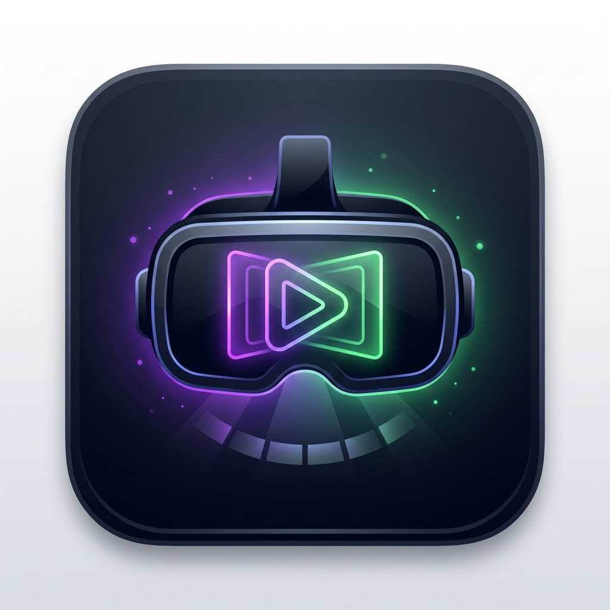
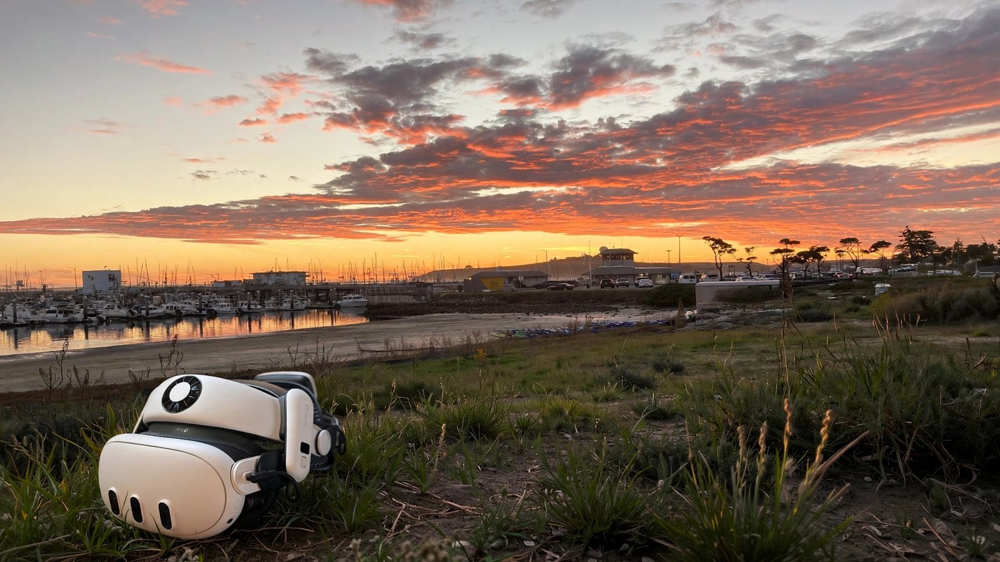
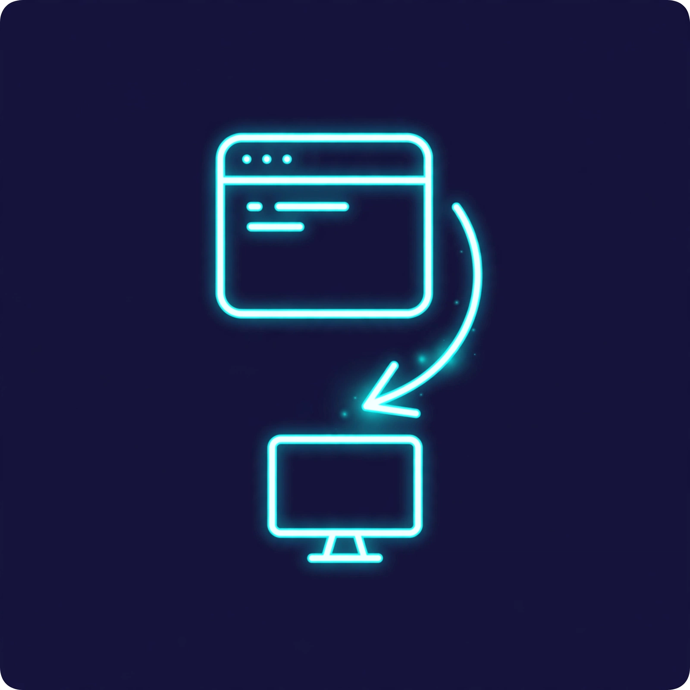

DeadEasy Player
Available now
A 3D video player for Quest that plays side-by-side and over-under 3D in real stereoscopic 3D. Plays files from your device or your home network, and works as an external player from other apps.

We build useful things that do one job well — mostly for Meta Quest, plus a few for the desktop and the TV.

Available now
A 3D video player for Quest that plays side-by-side and over-under 3D in real stereoscopic 3D. Plays files from your device or your home network, and works as an external player from other apps.
Community build
A community build of the Plezy Plex/Jellyfin client with minor Quest enhancements — made for use with DeadEasy Player as an externally selected 3D viewer.
In development
A spatial remote workspace for Quest — RDP, VNC/Mac and SSH sessions as freely placeable windows in passthrough.
Not everything here is for a headset. Same studio, different screens: a Windows tray utility, a Linux desktop in a container, and a photo screensaver for the TV.

Available now
A tiny Windows tray app that opens new app windows on the monitor you launched them from — built for multi-monitor Remote Desktop, handy on a local desktop too.

Open source
A full Ubuntu 24.04 KDE Plasma desktop in a Docker container, styled like macOS and reachable over RDP — with H.264 video, webcam redirection, audio, drive redirection, and GPU-accelerated OpenGL.

Personal prototype
A photo gallery and system screensaver for Android TV / Google TV, showing your Google Photos in five layouts with an offline cache and daily active hours.